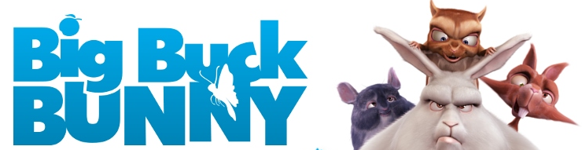

Open Movies
Banner de www.orange.blender.org (porción) // Licencia: CC-BY-2.5 (Creative Commons)
Ton Roosendaal dio de nuevo en la diana al poner en marcha una nueva manera de hacer avanzar el software: las open movies.
Se trata de crear proyectos en forma de corto animado que hacen evolucionar el software hacia la solución de problemas reales y la creación de herramientas verdaderamente útiles. Así nació Elephants Dream, la primera open movie de la Historia. El proyecto se llamó Orange.
¿Qué diferencia una película open movie de otra que no lo es?. Cuando la open movie se acaba se pone a disposición de los usuarios no sólo el DVD para visualizarlo sino todo el material: modelado de los personajes, escenas, animaciones, montaje, archivos de audio... todo. Además, al estar licenciado bajo GPL, permite al usuario utilizar uno de esos personajes, por ejemplo, no sólo para estudiarlo y aprender, sino para crear una obra derivada sin temor a ser denunciado. Usuarios de Blender y aficionados compran ese DVD antes de que sea realizado en su totalidad y así se financia el proyecto. Como recompensa Blender Institute hace constar el nombre de esos compradores en los créditos finales.

Banner de www.orange.blender.org (porción) // Licencia: CC-BY-3.0 (Creative Commons )>
Tras el éxito de la primera open movie Roosendaal decide que estos proyectos sean coordinados desde el arriba citado Blender Institute en lugar de Blender Foundation. Y así llegó Big Buck Bunny que hizo evolucionar a paso de gigante todas las técnicas de creación y animación de pelos. La historia de este enorme conejo al que la ardilla voladora saca de sus casillas se desarrolló bajo el proyecto Peach.
Banner de www.sintel.org (porción) // Licencia: CC-BY-3.0 (Creative Commons)
Y si hay una open movie emblemática esa es Sintel bajo el proyecto Durian; aclamada por la crítica y galardonada con todo tipo de premios, incluida la banda sonora, hizo quitarse el sombrero a propios y extraños. Como todas las open movies fue desarrollada por un pequeño grupo de animadores y programadores, lo que hace que el resultado sea digno de admiración.
Banner de www.yofrankie.org // Licencia: CC-BY-3.0 (Creative Commons)
No sería justo pasar por alto el proyecto Apricot que pone en marcha la creación de Yo Frankie!; un videojuego con los personajes de Big Buck Bunny. En realidad es un videojuego destinado a no terminarse nunca por lo que parece. Digamos que es el campo de pruebas de las diferentes técnicas que se desarrollan en el motor de juegos de Blender. La protagonista del videojuego: la famosa ardilla voladora enemiga de Big Buck Bunny.